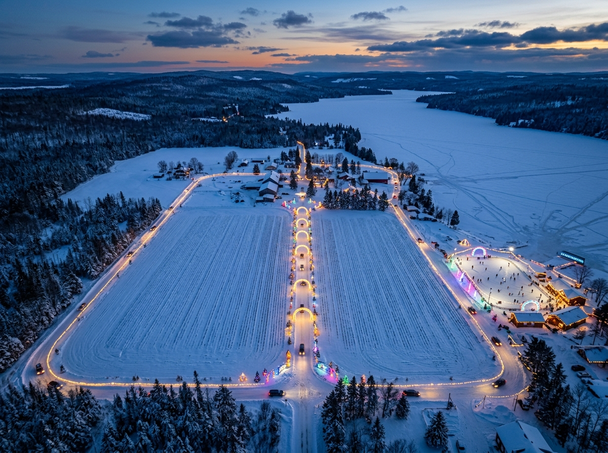
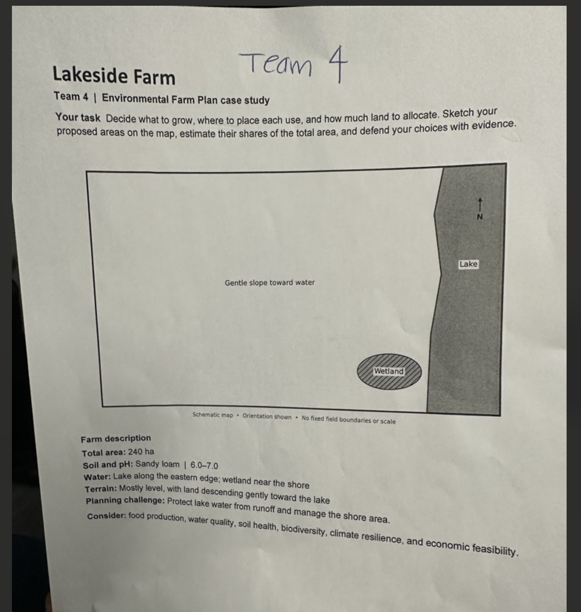

4R Nutrient Stewardship Certification
EcoLakeside Farm adheres strictly to Fertilizer Canada’s science-based 4R Nutrient Stewardship framework, supported by Nutrients for Life Canada. By aligning nutrient inputs with potato and garlic biology, we maximize yield while eliminating nutrient loss to the watershed.
Right Source
Polymer-coated controlled-release urea (ESN) releases nitrogen gradually as soil warms. Composted manure applied strictly to upper inland fields feeds soil biology sustainably without runoff risk.
Right Rate
Precision GPS soil sampling calibrated specifically to potato tuber demand and garlic sulfur requirements. Variable-Rate Application prevents over-fertilizing sandy ridges.
Right Time
Split feeding: starter at planting and fertigation during active tuber bulbing. Strict zero application on frozen, snow-covered, or waterlogged ground.
Right Place
Subsurface precision banding 2 inches below and beside seeds. Zero surface broadcasting near the 30-meter riparian lake buffer or water channels.
Grounding our practices in 4R certification brings all operational pillars together into an integrated master summary.
Read Executive Recap →Executive Recap: The Sustainable Farm Model
A balanced triple-bottom-line system uniting food security, watershed protection, and year-round economic viability.
High-Yield Companion Crops
Potatoes (100 ha) provide 15M cal/ha of staple food, while companion Garlic (110 ha) naturally repels Colorado potato beetles and soil fungi with sulfur vapors.
Zero chemical insecticide relianceClosed-Loop Lake Protection
Perpendicular contour farming stops downhill erosion. A 3-stage constructed wetland cleans 100% of field runoff for drip irrigation. Zero direct lake pumping or pollution.
88%+ Nutrient absorption & clean supplyYear-Round Monetization
Off-season drive-through holiday light festival between crop rows and along perimeter roads, plus a frozen lake skate park, generating over $200k in profitable winter revenue.
Continuous seasonal cash flowAgriculture that enriches the land rather than depleting it.
By harnessing natural biology, including bumblebee pollination, predatory insects, biochar moisture buffers, composted manure, and 4R precision banding, EcoLakeside Farm proves high yields and watershed protection thrive together.
Every technical decision in this model is grounded in Canadian agronomic research and water stewardship data.
View Sources & Citations →References & Sources
Direct links and reference materials informing the farm plan.
Seasonal & Alternate Land Uses

Dividing Road & Perimeter Light Drive
The 4 km illuminated drive-through light track is strictly placed along the central dividing road between the potato and garlic fields, continuing in a continuous scenic loop all around the farm's outer perimeter roads.
Frozen Lake Skate Park
During the deep winter freeze, the lake near the shoreline freezes into thick, safe ice. We groom an illuminated eco-skate park with music, festive light arches, and heated changing barns offering warm cider and equipment rentals.
Winter Monetization & Pricing Structure
